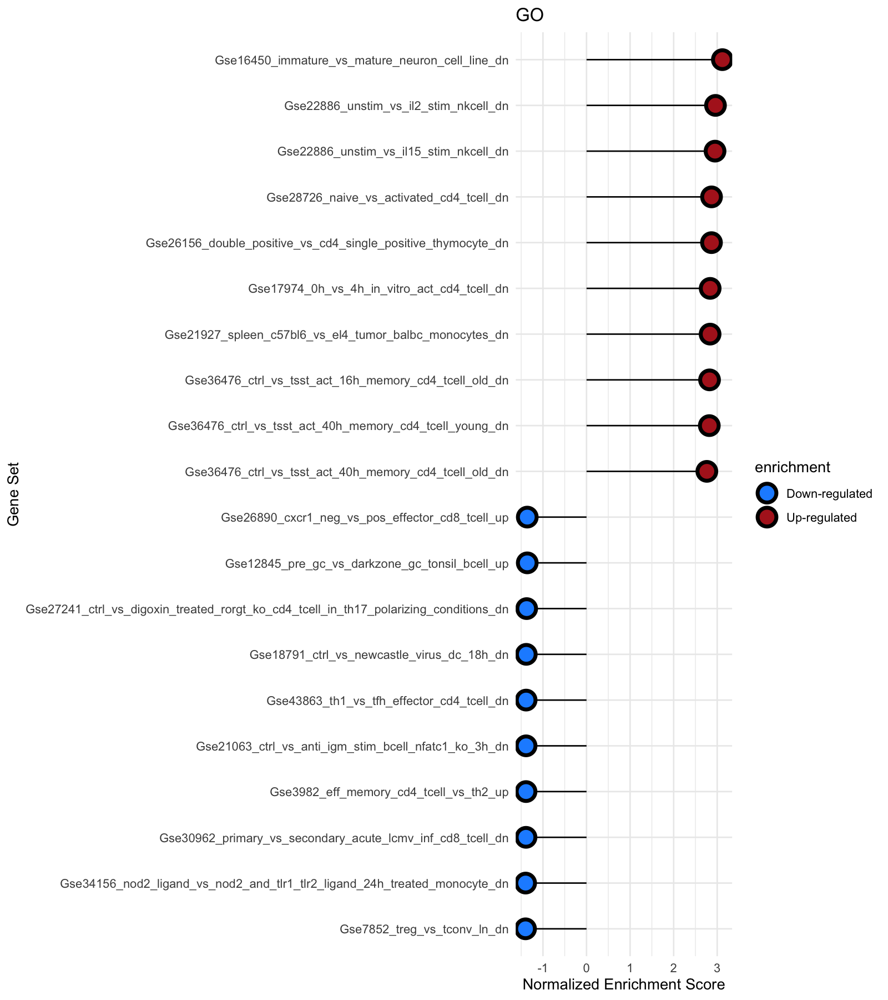

Analyses report
Bioinformatic exercise
The present exercise aims to give you the opportunity to demonstrate your capabilities in analysis of RNASeq data. If you do not have computational resources to perform the full analysis, you can scale down the data sets as you see appropriate. You can use any tools/programming languages you desire, but please provide us with the code you used. Accessions SRR5223500, SRR5223522, SRR5223543 contain RNASeq data of non-treated cells while SRR5223505, SRR5223547 and SRR5223570 have been treated with a stimulatory agent. We wish to determine the effect of the stimulatory agent on the transcriptome of these cells in order to understand its effects on cell differentiation.
Questions:
- Perform quality control of the sequence data. Are all samples appropriate to use?
- Map the reads to a reference, perform QC and calculate gene counts. Are all samples appropriate to use? -
- What is the expression of gene FOXP3 in stimulated vs non-treated cells?
- What genes are most differentially expressed between treated and non-treated cells? -
- What is translatability and how would you assess that in the context of RNAseq data? Prepare a presentation of your analysis methods and answers to the questions above to be presented at the day of interview.
The analyses of the data and brief results are desibed in this file which will be further elaborated in the presentation.
0. Data download processing analyses
- Data was downloaded as described in the Analyses_steps.rmd.
- Data was processed using bash script.
- Further QC, statistical analyses, visualizations and functional assessment was carried out using the code described in the Analyses_code.rmd file.
1. Perform quality control of the sequence data.
QC on sequencing data and alignment
To asses the quality of the read data, FASTQC followed by MultiQC was used. Overall, the data has been sequenced at high depth where most of the samples have between 34-50 million reads as indicated in the QC on reads report. Even though one sample SRR5223570 has lower sequencing depth of 8.8 million reads, the depth is sufficient to reliably quantity expression of most of the expressed genes.
Alignment and QC of the alignment
The reads were aligned to human references genome using Hisat2 and read counts was performed using featureCounts algorithms.
The summary of read alignment and QC is reported in mapping qc where approximately 93% or better alignment rate was observed. The read count statistics indicated 62% or better assignment of reads to genes wihich is reported in the counts qc file.
2. QC on count data
Feature level QC was performed on the resulting data from alignment and feature counts in the directory.
Violin plots to assess data
3. Expression of FOXP3
A higher expression of FOXP3 was observed in the treated samples vs. untreated samples.
4. Statistical analyses Visualization
The results of differential gene expression analyses using DESeq2 are reported here.
Volcano plot
MA plot

Heatmap
5. Functional assessment
The results of Gene Set Enrichment analyses bases on various gene sets available through msigdb are reported in this file
Hallmark
curated_geneset
computational
GO
 ###Immunological
Regulation
End